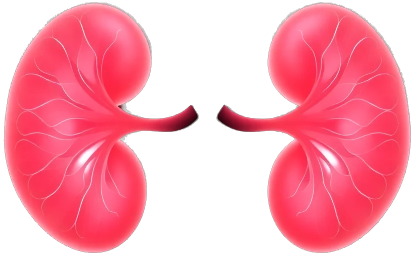

Welcome to Your Healing Space
This program is designed to guide you through a daily process of regeneration. Each module uses specific frequencies, visualizations, and breathing techniques to support your body's natural ability to heal. Follow the steps in order for the best results.
Focus on this image of vibrant, healthy kidneys. Imagine your own kidneys glowing with this same vitality. This visualization, combined with the 852 Hz frequency, helps return your cells to their original, healthy blueprint.
Listen to the 852 Hz Healing Frequency
This is the "Atom of Living Water." It represents pure, life-giving energy. As you gaze at it, you are activating your subconscious mind to purify and restore optimal kidney function, clearing any blockages at a cellular level.
Release fear, guilt, and anger stored in the kidneys. This breathing exercise will help you unlock and let go of these emotions. Follow the guide below.
Press Start to Begin
Click on an affirmation to listen. Let the words wash over you, reprogramming your cells for perfect health. Repeat them to yourself with deep feeling and belief.
Track your journey for 21 days to build a powerful healing momentum. Your data is saved in your browser and is completely private.